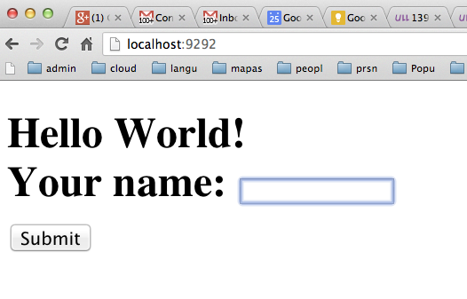

Siguiente: Cookies y Rack Subir: Rack::Response Anterior: Ejemplo Simple Índice General Índice de Materias
[~/local/src/ruby/sinatra/rack/rack-debugging]$ cat hello_response.rb
# encoding: utf-8
require 'rack'
require 'pry-debugger'
class HelloWorld
def call env
req = Rack::Request.new(env)
res = Rack::Response.new
binding.pry if ARGV[0]
res['Content-Type'] = 'text/html'
name = (req["firstname"] && req["firstname"] != '') ? req["firstname"] :'World'
res.write <<-"EOS"
<!DOCTYPE HTML>
<html>
<title>Rack::Response</title>
<body>
<h1>
Hello #{name}!
<form action="/" method="post">
Your name: <input type="text" name="firstname" autofocus><br>
<input type="submit" value="Submit">
</form>
</h1>
</body>
</html>
EOS
res.finish
end
end
Rack::Server.start(
:app => HelloWorld.new,
:Port => 9292,
:server => 'thin'
)
[~/local/src/ruby/sinatra/rack/rack-debugging]$ ruby hello_response.rb debug >> Thin web server (v1.5.1 codename Straight Razor) >> Maximum connections set to 1024 >> Listening on 0.0.0.0:9292, CTRL+C to stop
Ahora cuando visitamos la página http://localhost:9292 el navegador queda a la
espera del servidor y el servidor alcanza la línea de break.
From: /Users/casiano/local/src/ruby/sinatra/rack/rack-debugging/hello_response.rb @ line 10 HelloWorld#call:
7: def call env
8: req = Rack::Request.new(env)
9: res = Rack::Response.new
=> 10: binding.pry if ARGV[0]
11: res['Content-Type'] = 'text/html'
12: name = (req["firstname"] && req["firstname"] != '') ? req["firstname"] :'World'
13: res.write <<-"EOS"
14: <!DOCTYPE HTML>
15: <html>
16: <title>Rack::Response</title>
17: <body>
18: <h1>
19: Hello #{name}!
20: <form action="/" method="post">
21: Your name: <input type="text" name="firstname" autofocus><br>
22: <input type="submit" value="Submit">
23: </form>
24: </h1>
25: </body>
26: </html>
27: EOS
28: res.finish
29: end
[1] pry(#<HelloWorld>)>
Consultemos los contenidos de res:
[1] pry(#<HelloWorld>)> res
=> #<Rack::Response:0x007fe3fb1e6180
@block=nil,
@body=[],
@chunked=false,
@header={},
@length=0,
@status=200,
@writer=
#<Proc:0x007fe3fb1e5f50@/Users/casiano/.rvm/gems/ruby-1.9.3-p392/gems/rack-1.5.2/lib/rack/response.rb:27 (lambda)>>
Después de un par de continue el servidor se queda a la espera:
[3] pry(#<HelloWorld>)> continue ... [1] pry(#<HelloWorld>)> continue

Rellenamos la entrada con un nombre (Pedro) y de nuevo el servidor alcanza el punto de ruptura:
[2] pry(#<HelloWorld>)> req.params
=> {"firstname"=>"Pedro"}
[7] pry(#<HelloWorld>)> break 28
Breakpoint 1: /Users/casiano/local/src/ruby/sinatra/rack/rack-debugging/hello_response.rb @ line 28 (Enabled) :
26: </html>
27: EOS
=> 28: res.finish
29: end
[8] pry(#<HelloWorld>)> continue
Breakpoint 1. First hit.
...
[9] pry(#<HelloWorld>)> res.headers
=> {"Content-Type"=>"text/html", "Content-Length"=>"370"}
[10] pry(#<HelloWorld>)>